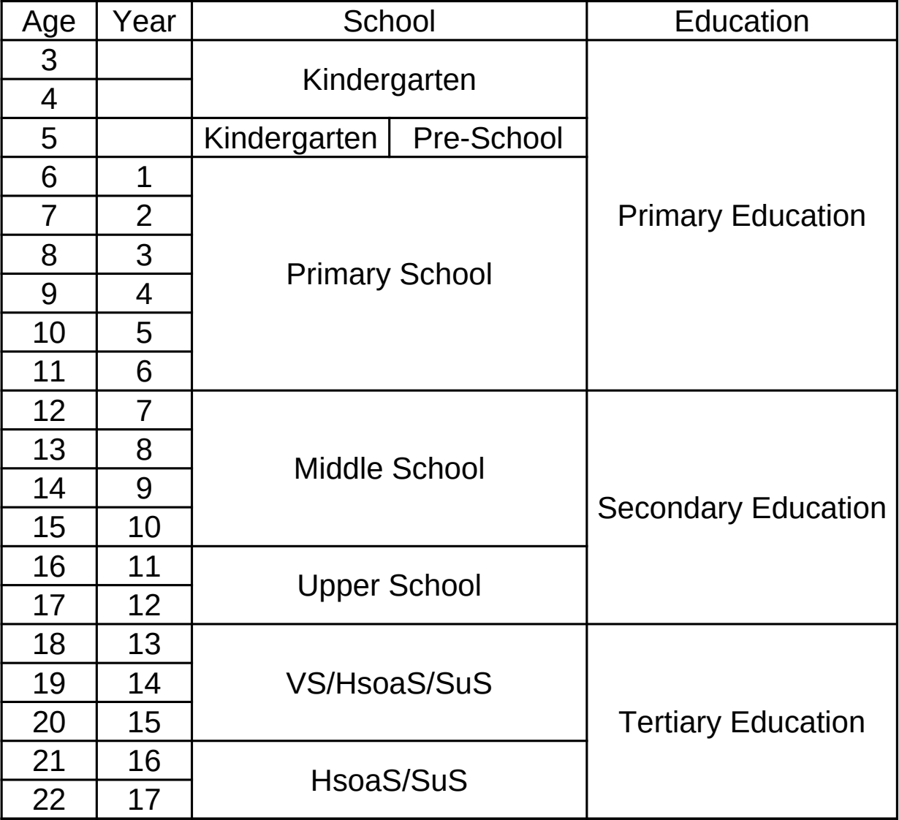

Education
Education is centralized and controlled by the state. It is focused on efficiency and collectiveness. Societal education is seen as equally important as academical education. The contents are country-wide uniform. Short-lived subjects don't exist to ensure quality. This is because short-lived subjects rarely have qualified teachers in this area, thus the education in these is worse. Education is divided into primary, secondary and tertiary education.

Contents
- 1. Primary Education
- 2. Secondary Education
-
3. Tertiary Education
- 3.1. Vocational School
- 3.2. Higher school of applied sciences (Hsoas)
- 3.3. Scientific upper school (Sus)
-
3.4. University
- 3.4.1. University of High Arts
- 3.4.2. Old University
Primary
Levels
- Kindergarten (3-6 years), mandatory
- Pre-school (5 years), voluntary
-
Primary school (6-11 years), mandatory
- Year 1-6
- ~16 students per class
- Uniform required
Subjects
The hours per week roughly decrease from top to bottom per list.
- Native language (from Year 1)
- Maths (from Year 1)
- 1st foreign language (from Year 1)
-
Media Literacy (from Year 1)
- Source Verification
- Polarization
- Data Protection & Privacy
- Security
- Advertisement
-
Manipulation of Engagement
First years start with advertisement. They are not taught how to spot it or analyze it - they are simply taught how to advertise things. This is done so they develop a passive understanding on how to motivate people to buy things. They start with "Create a problem, sell the solution." So in the beginning, students are taught how to advertise (create problems), get clicks (addiction), fake information (just claim, people believe), ... in order to take away the dimension of having to spot it yourself.
-
Science (from Year 3)
- History
- Biology
- Geography
- Society
- Culture
- Ethics
- Sport, Nutrition, Health and Hygiene (from Year 1)
-
Art (from Year 1) (Art in primary school is focused on doing and creating, not observing or evaluating.)
- Music
- Painting/Crafting
- Acting
Grading
All schools, primary, secondary and tertiary, use the following for assessment scores and marks. They consist of a score from 0 to 100. 100 being the maximum achieveable score and 0 being the lowest. Results below 50 are considered not passed.
- 100-90, "Exemplary" or "Excellent"
- 89-80, "Very good"
- 79-70, "Good"
- 69-60, "Average"
- 59-50, "Acceptable"
- 49-0, "Unacceptable" or "Failed"
Lunch
The lunch is prepared by professional nutritionists and cooks. They only use unprocessed foods. No sugar is used, except for naturally occurring sugars in unprocessed foods. For drinks, they only serve water and tea.
Students are assigned shifts of lunch duty (they are called "staff"). During the lunch break, they put on clean white aprons and hats, and retrieve the food from the kitchen. All kitchen personnel stand in a row during handover. The staff, also in a row, pass by each kitchen member, make eye contact, shake hands with their right hand, and say, "Thank you for the food and your efforts." The kitchen personnel respond, "My pleasure, enjoy your meal." The staff bring the food to the cafeteria, where they will serve it. They prepare the food on trays and hand it to the students with both hands. While making eye contact, the student says, "Thank you for the food and your efforts." The staff answer, "My pleasure, enjoy your meal." Students serve themselves water or tea, as they might want to refill. When every student is served, the staff serve each other following the same procedure and eat. They have slightly less time to eat that day due to pre- and post-paration.
Exercise
they do exercise
Reinigung
Students clean the school every day for 30 minutes: Class rooms, yard, floors, cafeteria, gymnasium, baths (without chemical products). The baths are additionally sanitized by professionals. Students organize the sanitation themselves, and are being supervised by the teachers (both cleanliness and organization). The practice is called Reinigung, as the term denotes both hygienic and symbolic functions.
Extracurricular activities
thems is doing tings
Schedule
A typical schedule in school looks like this:
- 08:00am - 09:30am - 1st period
- 09:30am - 09:45am - Excercise
- 09:45am - 10:00am - Break
- 10:00am - 11:30am - 2nd peroid
- 11:30pm - 12:00pm - Lunch Break
- 12:00pm - 01:30pm - 3rd period
- 01:30pm - 02:00pm - Break
- 02:00pm - 03:30pm - 4th period
- 03:30pm - 04:00pm - Reinigung
Uniform
School uniforms are worn throughout primary and secondary education. Their function includes promoting equality and social cohesion, supporting a sense of community, and enhancing safety on school grounds through easier identification of unauthorized individuals. Uniforms further contribute to discipline, student identification, and the development of affiliation with the school.
The uniforms are produced by the state. They contain no plastics and are made exclusively from natural materials, with the exception of sports apparel. Students receive a new set of uniforms each year. The uniforms are financed through taxation and are therefore provided passively, resulting in lower contributions from low-income households. Students are allowed to wear their uniforms in whatever combination they want.
A set includes:
- Dress shirt (10), short-arm dress shirt (10)
- Pants (10), short pants (10)
- Socks (20)
- Shoes (4)
- Winter shoes (2)
- Pullover (6)
- Ties (4)
- Lightweight jacket (2)
- Rain coat (2)
- Winter jacket (2)
- Sports pants (4)
- Sport shirt (4)
- Trainers (2)
- Hat (2)
- Knit hat (2)
- Cap (2)
Additional for girls:
- Blouse (10), short blouse (10)
- Skirt (knee-length) (10)
- Knee-high socks (20)
- Ribbon bow (4)
- Sports bra (4)
- Hair bow (2)
Secondary Education
Levels
-
Middle school (12-15 years), mandatory
- Year 7-10
- ~32 students per class
- Uniform required
-
Upper school (16-17 years), voluntary
- Year 11-12
- ~64 students for fundamentals
- ~32 students for advanced topics
- Uniform required
Subjects
The hours per week roughly decrease from top to bottom per list.
Middle school
- Native language
- Maths
- 1st foreign language
- Media Literacy
- History
- Political Education
- Geography
- Computer Science
- Sport, Nutrition, Health and Hygiene
-
Civics (All are taught comparative, not evaluative.)
- Societies
- Cultures
- Ethics, Law, and Guilt
- Philosophy
- Religions
- Political Systems
- 2nd foreign language
- Biology
- Physics
- Chemistry
- Art (now focused on observing, evaluating, and consuming, not on making)
Upper school
- Native language
- Maths
- 1st foreign language
- Scientific Processes
- Physics
- Chemistry
- Biology
- Computer Science
Grading
Grading is the same as in primary education.
Lunch
Lunch is the same as in primary education.
Exercise
they do exercise
Reinigung
The sanitization is the same as in primary education.
Extracurricular activities
thems is doing tings
Schedule
The schedule is the same as in primary education.
Uniform
School uniforms are worn throughout primary and secondary education. Their function includes promoting equality and social cohesion, supporting a sense of community, and enhancing safety on school grounds through easier identification of unauthorized individuals. Uniforms further contribute to discipline, student identification, and the development of affiliation with the school.
The uniforms are produced by the state. They contain no plastics and are made exclusively from natural materials, with the exception of sports apparel. Students receive a new set of uniforms each year. The uniforms are financed through taxation and are therefore provided passively, resulting in lower contributions from low-income households. Students are allowed to wear their uniforms in whatever combination they want.
A set includes:
- Suit jacket (4)
- Dress shirt (10), short-arm dress shirt (10)
- Pants (10), short pants (10)
- Socks (20)
- Shoes (4)
- Winter shoes (2)
- Pullover (6)
- Ties (4)
- Lightweight jacket (2)
- Rain coat (2)
- Winter jacket (2)
- Sports pants (4)
- Sport shirt (4)
- Trainers (2)
- Hat (2)
- Knit hat (2)
- Cap (2)
Additional for girls:
- Blouse (10), short blouse (10)
- Skirt (knee-length) (10)
- Knee-high socks (20)
- Ribbon bow (4)
- Sports bra (4)
- Hair bow (2)
In upper school, the uniform is a dress suit.
Tertiary Education
Vocational School
- Entry requirement: middle school degree
- Focus: industry
- Mode of instruction: class, homework, exams
- No uniform
- Students spend 3 days in a company and 2 days in school
- Students make money and are retained for 3 years after their studies
Higher school of applied sciences (Hsoas)
- Entry requirement: middle or higher school degree (dependent on major)
- Focus: industry
- Mode of instruction: lectures, homework, exams
- No uniform
- Students spend 1 day in a company and 4 days in school
- Students make money and are retained for 3 years after their studies
Scientific upper school (Sus)
- Entry requirement: upper school degree
- Focus: research
- Mode of instruction: lectures, homework, exams
- No uniform
University
Language of instruction: German
Die Universität dient der bewussten elitären Wiedereinsetzung der nicht-essentiellen Disziplinen in herausragender akademischer Tiefe, entkoppelt von modernem Massenzugang und ideologischer Inflation.
Die Universität lehnt die Moderne ab, fordert eine Zeitlosigkeit.
Sie steht für Teile der Gesellschaft wo Seele, Ausdruck und Tiefe fehlen.
Einführungsstudium (2 Jahre) vor beiden Universitäten:
- Ethik, Recht und Schuld
- Geschichte und Geographie
- Kulturen und Religionen
- Körper, Form und Bewegung
- Logik und Mathematik
- Naturkunde und Kosmologie
- Politische Systeme
- Sprache, Ausdruck und Impression
- Techniken und Werkzeuge
University of High Arts (UoHA)
Universität der hohen Künste (UdhK)Die Universität der hohen Künste charakterisiert sich als exzellent oder hoch.
Kunst ist kein Dialog oder Diskurs, nicht politisch, sondern ein menschlicher Ausdruck oder Abdruck (Form). Kunst ist diszipliniert, verkopft, lastig; oft schwer. Die Lehrform ist fordernd, klassisch, stilstreng, aber auch ästhetisch und ausdrucksstark. Expressive Kunst wird nicht als Ausdruck des Beliebigen gesehen, tatsächlich braucht es einer inneren Notwendigkeit des Gestaltungszwangs. Das Geformte steht immer über dem Dekonstruierten. Ausdruck hat Gewicht, und ist tragend.
Studienangebot:
- Philosophie
- Klassische Musik
- Komponieren
- Malerei
- Bildhauerei
- Architektur
- Ballett
- Oper
- Theater
- Literatur
Studiengänge wie Philosophie oder Architektur sind rein künstlerisch. Vor allem Architektur enthält keine physikalischen Module. Philosophie ist eher literarisch und expressionistisch.
-
Entry requirement:
- Summa cum laude (exemplary) upper school degree
- IQ-test above 135
- Focus: arts and fundaments
- Mode of instruction: variable
- Uniform required
-
Entry-study (2 years)
- Same modules for all students of UoHA and Old University
-
Fundamental-study (5 years)
- Rquired modules in chosen major
-
Master-study (3 years)
- Specialization and personalization in chosen major
Old University
Alte UniversitätDie alte Universität charakterisiert sich als alt oder tief.
Die alte Universität kehrt zur tiefen Gelehrsamkeit zurück, zu Fundamenten einer Zivilisation und Grundmauern der Weltordnung. Systematisch und scharf werden immerwährende Urgesetze gelehrt, unerschütterlich, still und ernst. Heute unzeitgemäß, aber notwendig. Diskutiert werden Dinge die ewig gelten.
Studienangebot:
- Theologie (unter anderem: Christentum, Islam, Hinduismus, Buddhismus, Judentum, Taoismus, Konfuzianismus, Stoizismus, antike griechisch-römische Religion, traditionelle afrikanische Religionen, Zoroastrismus, Shinto, indigene amerikanische Religionen)
- Medizin
- Philosophie
- Recht
Das Theologiestudium behandelt alle Religionen und ist vergleichend.
Das Philosophiestudium ist im Vergleich zur Universität der hohen Künste theoretischer, mathematischer, metaphysikalischer und logischer.
-
Entry requirement:
- Summa cum laude (exemplary) upper school degree
- IQ-test above 135
- Focus: arts and fundaments
- Mode of instruction: variable
- Uniform required
-
Entry-study (2 years)
- Same modules for all students of UoHA and Old University
-
Fundamental-study (5 years)
- Rquired modules in chosen major
-
Master-study (3 years)
- Specialization and personalization in chosen major